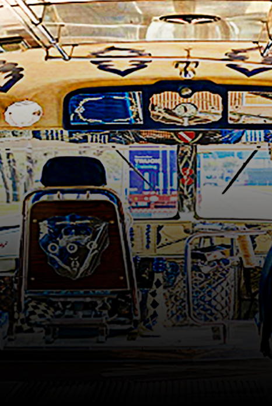

El colectivo no es un invento argentino
La verdad es otra, el colectivo proviene de otro lugar.
Ver más


Aunque muchos afirman que el colectivo es un invento argentino, en realidad es una adaptación del ómnibus, que ya existía desde el siglo XVII. El colectivo comenzó a circular en Buenos Aires en 1928, cuando taxistas buscaron una forma de ganar más dinero al transportar varios pasajeros en recorridos fijos. A diferencia del ómnibus, que estaba basado en chasis de camión y tenía conductor y guarda, el colectivo usaba automóviles modificados para llevar hasta 7 personas, con indicadores de destino removibles para facilitar el doble trabajo como taxi. Con el tiempo, los colectivos empezaron a transformarse en un tipo de vehículo único, distinto de los ómnibus y los taxis colectivos. Para 1934, ya se había establecido lo que llamamos el "colectivo clásico", con 11 asientos, que mantuvo su estilo durante años.
Los colectivos, a diferencia de los ómnibus, estaban sujetos a regulaciones de tamaño impuestas por las autoridades, para evitar que siguieran creciendo y afectaran a los tranvías y ómnibus. Otra gran diferencia es que los colectiveros comenzaron de manera informal, sin permisos oficiales, lo que hoy podría llamarse un servicio "trucho". Imitaban los recorridos de los tranvías o de los ómnibus y, para que la gente supiera a dónde iban, usaban el mismo número que las líneas con las que competían. Por ejemplo, la línea 105 de hoy empezó como una copia del tranvía 86.
Recién en 1932, alrededor de 4 años después del inicio de sus actividades, la Municipalidad de la Ciudad de Buenos Aires reglamentó el servicio de colectivos y le dio carácter legal y paralizó, en cierta forma, su crecimiento descontrolado y contuvo su ímpetu.
Carmen Corso
Julio de 2001
La verdad es otra, el colectivo proviene de otro lugar.
Ver más